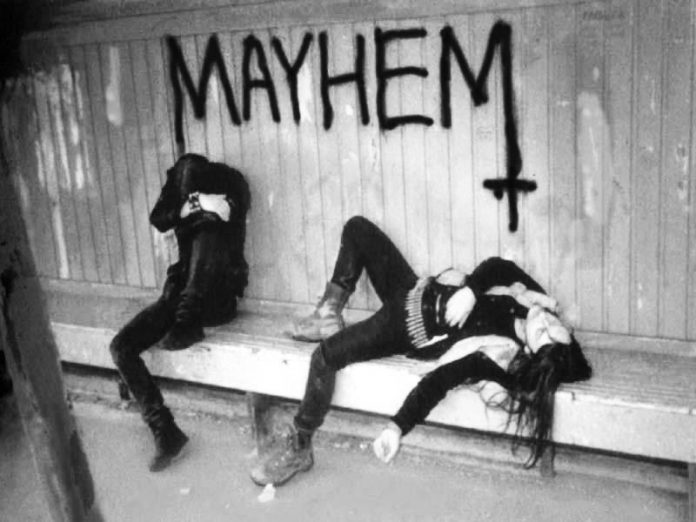
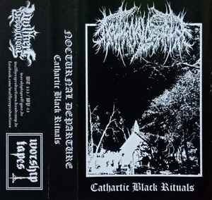

Black metal is an extreme subgenre of heavy metal music. Common traits include fast tempos, a shrieking vocal style, heavily distorted guitars played with tremolo picking, raw (lo-fi) recording, unconventional song structures, and an emphasis on atmosphere. Artists often appear in corpse paint and adopt pseudonyms. During the 1980s, several thrash metal and death metal bands formed a prototype for black metal. This "first wave" included bands such as Venom, Bathory, Mercyful Fate, Hellhammer, and Celtic Frost. A second wave arose in the early 1990s, spearheaded by Norwegian bands such as Mayhem, Darkthrone, Burzum, Immortal, Emperor, Satyricon, and Gorgoroth. The early Norwegian black metal scene developed the style of their forebears into a distinct genre.
Mayhem
Norwegian-inspired black metal scenes emerged throughout Europe and North America, although some other scenes developed their own styles independently. Some prominent Swedish bands spawned during this second wave, the second generation in Sweden being led by Dissection, Abruptum, Marduk, and Nifelheim. Initially a synonym for "Satanic metal," black metal has often sparked controversy due to the actions and ideologies associated with the genre. Some artists express misanthropic views, and others advocate various forms of extreme anti-Christian sentiment, Satanism, or ethnic paganism. In the 1990s, members of the scene were responsible for a spate of church burnings and murders. There is also a small neo-Nazi movement within black metal, although it has been shunned by many prominent artists. Generally, black metal strives to remain an underground phenomenon. Although contemporary black metal typically refers to the Norwegian style with shrieking vocals and raw production, the term has traditionally been applied to bands with widely differing sounds, such as Death SS, Mercyful Fate, Mayhem, Blasphemy, and the Greek and Finnish bands that emerged around the same time as the Norwegian scene.
Nocturnal Departure
Norwegian-inspired black metal guitarists usually favor high-pitched or trebly guitar tones and heavy distortion. The guitar is usually played with fast, unmuted tremolo picking and power chords. Guitarists often use dissonance—along with specific scales, intervals, and chord progressions—to create a sense of dread. The tritone, or flat-fifth, is often used. Guitar solos and low guitar tunings are rare in black metal. The bass guitar is seldom used to play stand-alone melodies. It is common for the bass to be muted against the guitar, or for it to homophonically follow the low-pitched riffs of the guitar. While electronic keyboards are not a standard instrument, some bands, like Dimmu Borgir, use keyboards "in the background" or as "proper instruments" for creating atmosphere. Some newer black metal bands began raising their production quality and introducing additional instruments such as synthesizers and even orchestras. The drumming is usually fast and relies on double-bass and blast beats to maintain tempos that can sometimes approach 300 beats per minute. These fast tempos require great skill and physical stamina, typified by black metal drummers Frost (Kjetil-Vidar Haraldstad) and Hellhammer (Jan Axel Blomberg). Even still, authenticity is still prioritized over technique. "This professionalism has to go," insists well-respected drummer and metal historian Fenriz (Gylve Fenris Nagell) of Darkthrone. "I want to de-learn playing drums, I want to play primitive and simple, I don't want to play like a drum solo all the time and make these complicated riffs." Black metal songs often stray from conventional song structure and often lack clear verse-chorus sections. Instead, many black metal songs contain lengthy and repetitive instrumental sections. The Greek style—established by Rotting Christ, Necromantia, and Varathron—has more traditional heavy metal and death metal traits than Norwegian black metal.